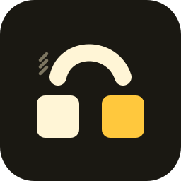
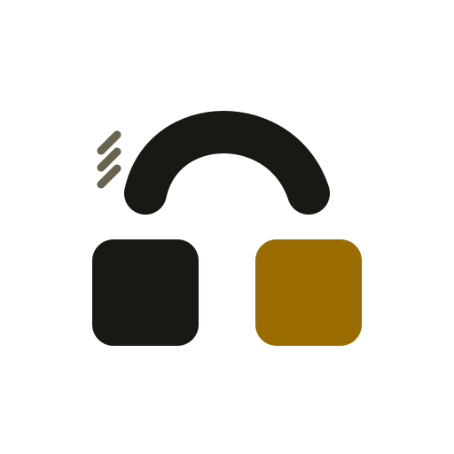
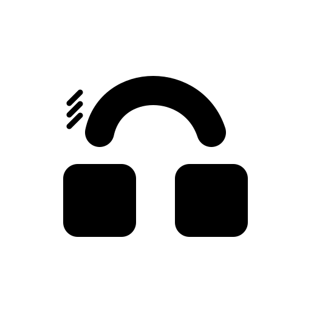
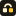

omahop is fast window switching for Omarchy floating workspaces. The mark: two window tiles and an arc that hops from the first to the second, with three ticks for the departure. The tile you hop to is citrus. Plain, quick, small.
1. The mark

App icon (dark tile). Files: icon.svg, icon-*.png

Glyph on dark: glyph.svg

Glyph on light: glyph-light.svg

One colour: stencil.svg, stencil-white.svg

64, 32, 16 px. Below 64 px use icon-small.svg (no ticks, bigger tiles)
2. Palette and contrast (WCAG, computed from the hex values)
Ground
#1a1812Dark background, icon tile16.3:1 on #fff5d6 (AAA)
Cream
#fff5d6Main shapes and text on dark16.3:1 on #1a1812 (AAA)
Citrus
#ffc83dThe tile that is hopped to, the o, accents on dark11.5:1 on #1a1812 (AAA)
Tick
#7c7560Three small ticks (decoration only)3.9:1 on #1a1812 (graphics only, not body text)
Paper
#f4f3f0Light background16.0:1 on #1a1812 (AAA)
Ink
#1a1812Shapes and text on light16.0:1 on #f4f3f0 (AAA)
Citrus deep
#9a6b00Citrus on light backgrounds4.2:1 on #f4f3f0 (graphics only, not body text)
Muted
#6a634fSecondary text on light5.4:1 on #f4f3f0 (AA)
Body text uses Ink and Muted (AA or better). Citrus and the ticks are graphic colours: 3:1 is the bar for graphics, so never set body text in them. The ticks are decoration, never the only carrier of meaning. No gradients, shadows or glows in the mark.
3. Type
JetBrains Mono
Bold for headings, regular for body. It is Omarchy's own default font (SIL OFL licence), so the project looks at home on the desktop it targets. Fallback: any monospace.
The wordmark omahop is drawn as vector strokes, not set in a font. Always lowercase, one word, the o in citrus. Say it "oh-ma-hop".
4. Spacing and shape
Base unit 8 px. Card padding 8% of the width, gaps 16 or 24 px.
Clear space around the mark: the height of one tile (about a quarter of the glyph width) on every side.
Minimum size: 16 px for the icon (the small variant), 96 px wide for the lockup.
Rounded corners everywhere, like the mark: tile radius 19% of its width, chips 10 to 14 px.
5. Do and do not
Use the dark icon tile for app and avatar slots, the glyph for flat backgrounds.
Use the light-background files on light pages (*-light.*).
Write the name in lowercase: omahop.
Say "fast window switching for Omarchy floating workspaces" and keep the not-affiliated line near it.
Keep text short and plain: key names, not hype.
Recolour the mark, stretch it, rotate it, or add a glow or shadow.
Use omagnet's violet for omahop, or Omarchy's logo or green.
Put the dark-ground glyph on a light or busy background (use the light glyph).
Write OMaHop, Omahop or O-ma-hop.
Imply that Omarchy endorses the project.
Use an em-dash or en-dash in any text.
Source: branding/tools (kit.py). Artwork released with the project under MIT. Colours checked 8 pairs.